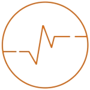
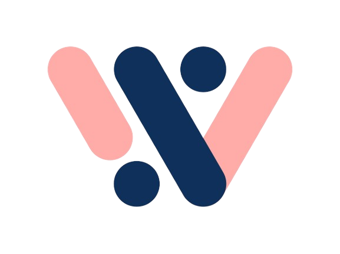
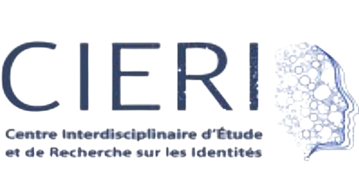
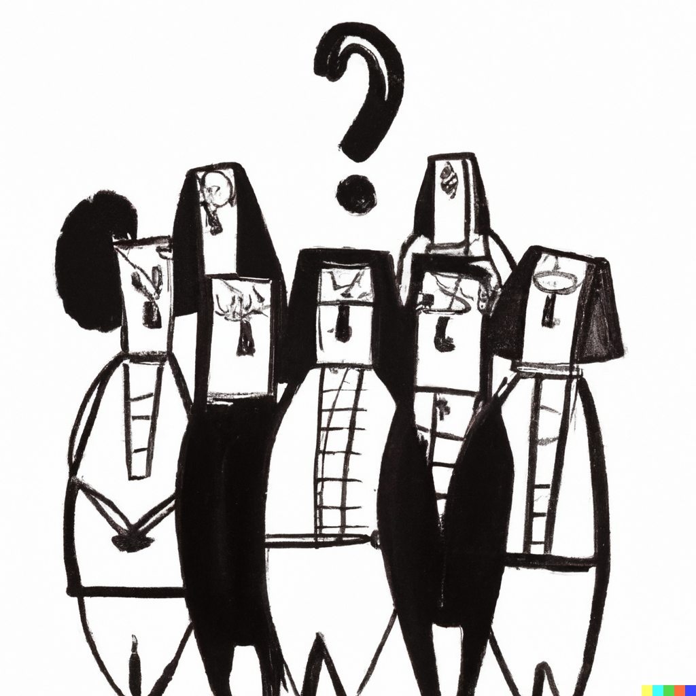
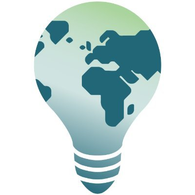

Resume
You can see my resume by clicking here (outdated).
In this page you will a more detailed explanation of what I did in my experiences or projects.
Experiences
• Data and software intern, Mar 2024 - Pres
I currently work with Yan Holtz as a data and open source software intern.
• 
Freelance dataviz developer, Aug 2023 - Dec 2023
I worked as a freelance data visualization developer, mainly for the Python and R graph galleries.
• 
Data science intern at Wanteeed, May 2023 - Aug 2023
I spent 4 months at the French startup Wanteeed working in data, particularly in data analysis and prediction. I also did a bit of natural language processing.
• 
Data analyst / Research intern at CIERI, May 2022 - Jul 2022
I spent 3 months at the French research center CIERI working on the relationship between cancer and socio-economic status. We used the SHARE database, a european database with data on health, socio-economic status and more.
Projects
• Vocal assistant for an exhibition in Berlin
Collaboration with Maurice Lebrun for a unique experience at the French Institute in Berlin, allowing visitors to converse with the late Douanier Rousseau. Utilizing speech-to-text, GPT-4, and text-to-speech models within a PureData + Streamlit interface.
Learn more
• A website to learn about statistics
Statistical Journey: a narrative, non-technical website to make learning statistics enjoyable and contribute to a culture of statistics. Articles are designed for accessibility and comprehension.
Learn more
• Talks on AI safety
In 2022, with the EffiSciences organization, I-co presented 2 conferences on artificial intelligence safety and one presentation for undergraduate student at Bordeaux University on language model in general.
Learn more• University projects
A selection of my favorite university projects, including research paper analysis, database cleaning automation, and handling missing values in big data contexts.
Learn more• Natural Language Processing web application
A Streamlit web application automating various NLP tasks, including sentiment analysis, word clouds, regex searches, and text similarity measurements.
Learn more
• Developing ML algorithm for social science research
For the CIERI organization, me and Thomas Salanova work on developing tools and analysis, mainly based on machine learning algorithm, for the social science research.
Learn moreContact
If you're interested in working with me, feel free to contact me at joseph.barbierdarnal@gmail.com or via LinkedIn.